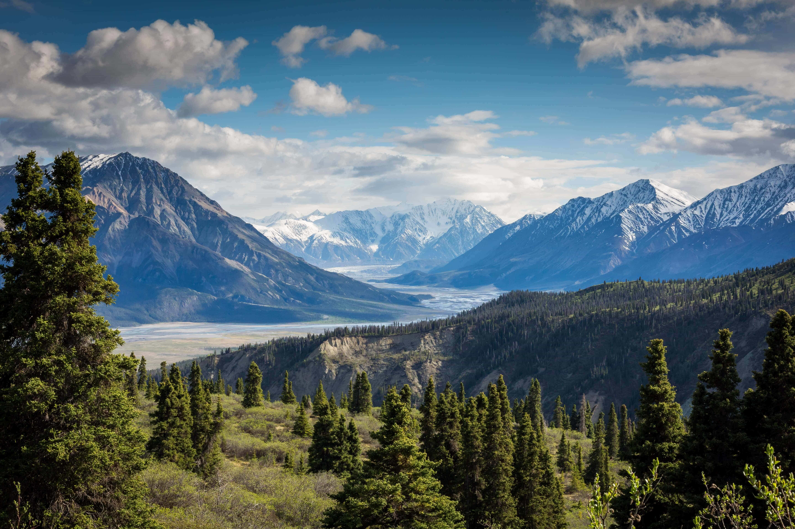 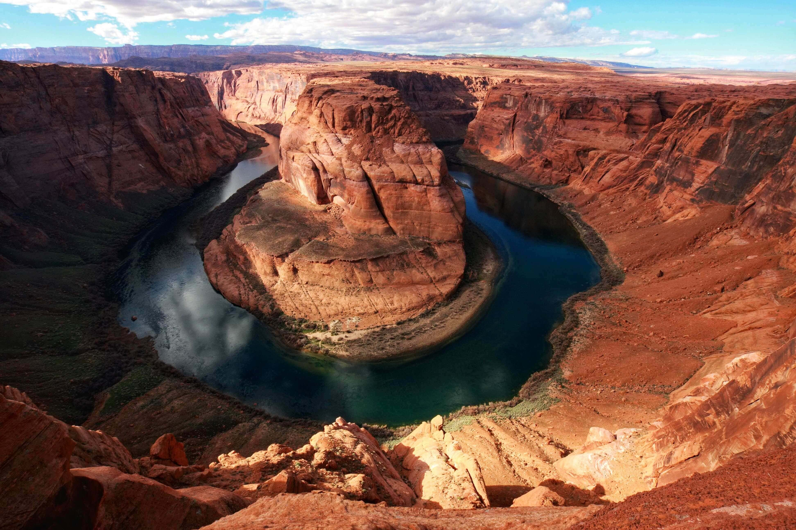 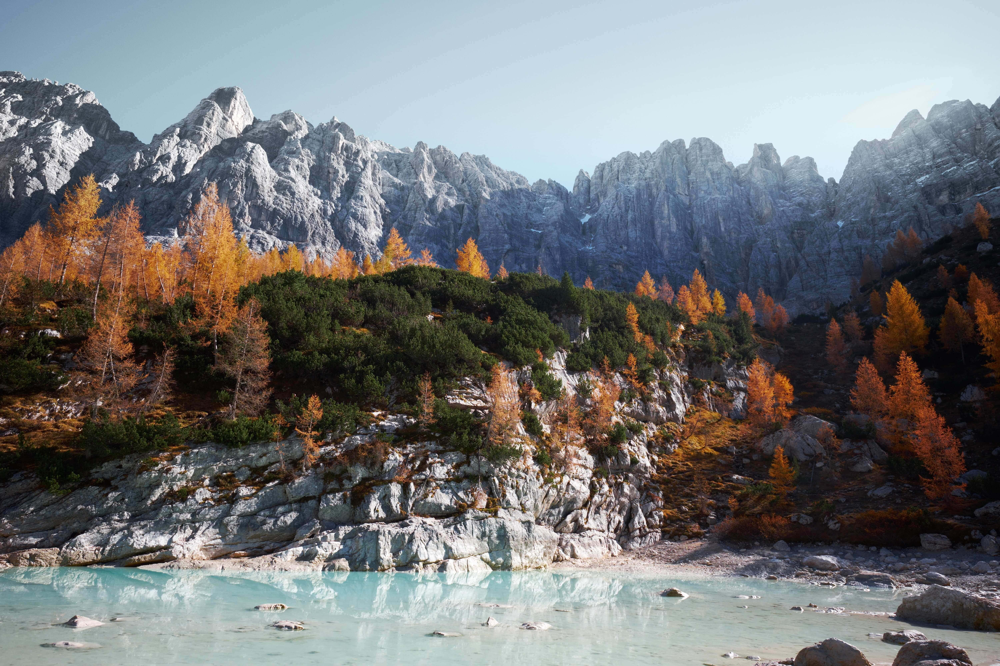 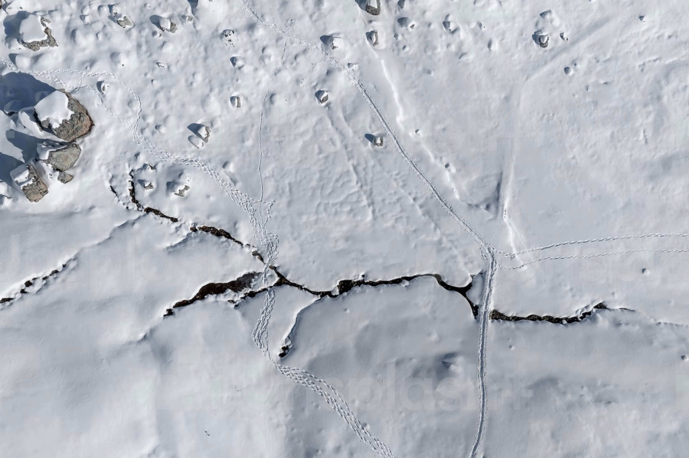 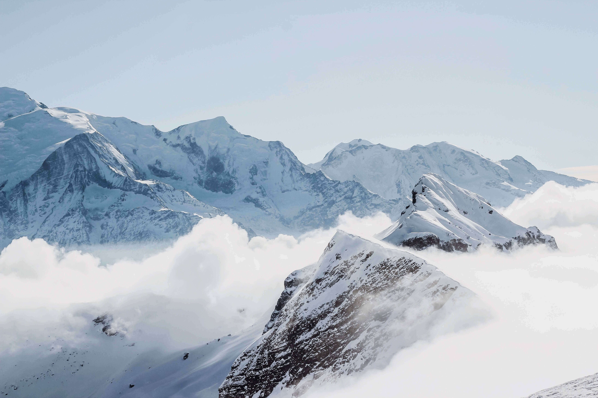 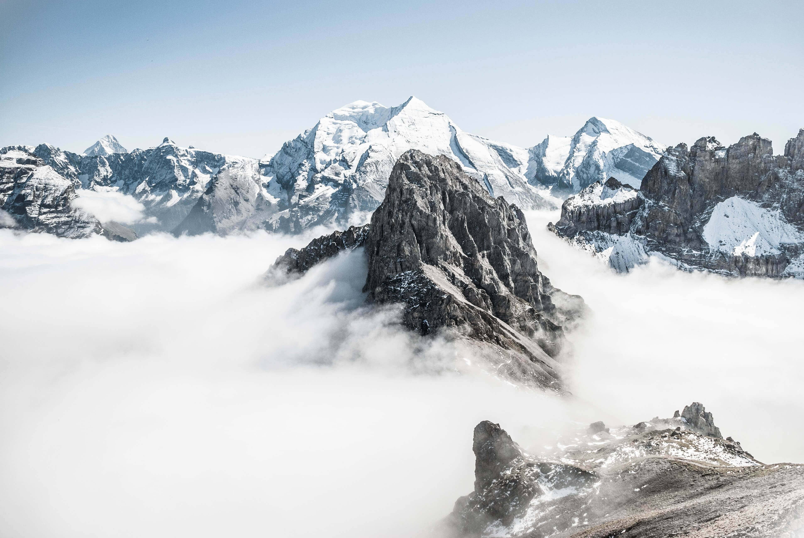 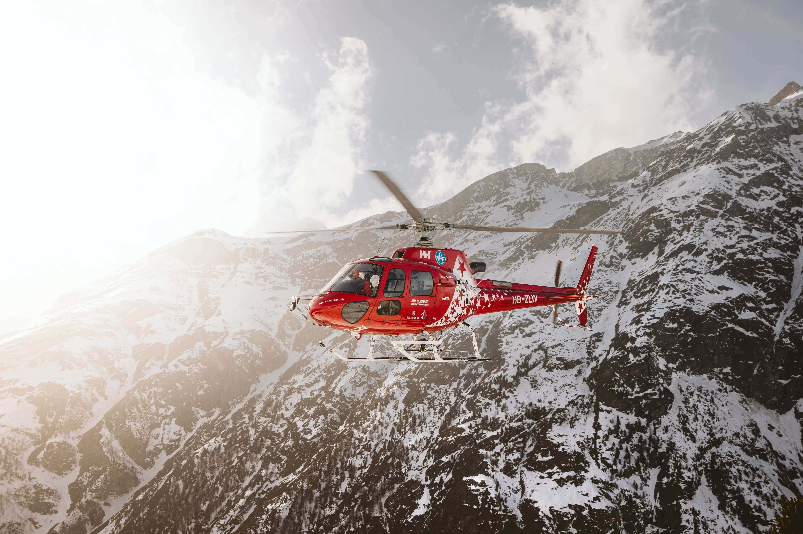
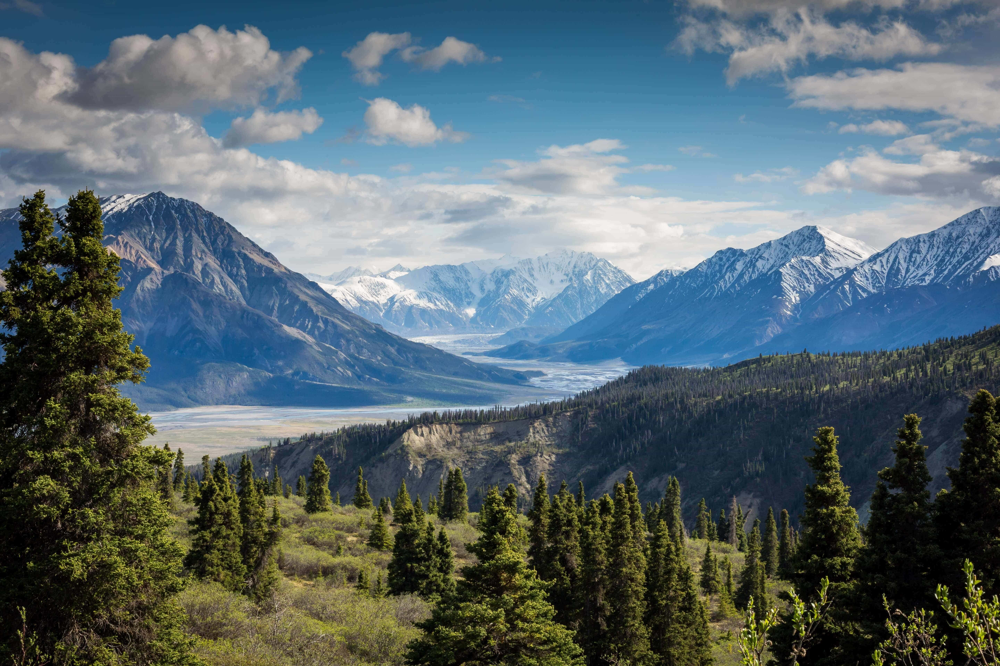 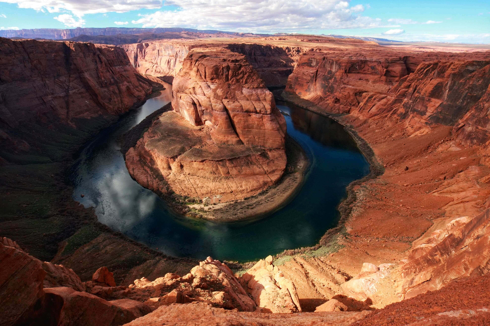 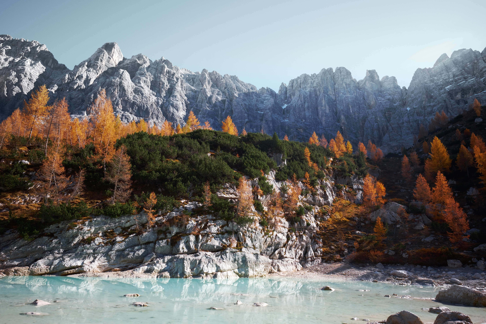 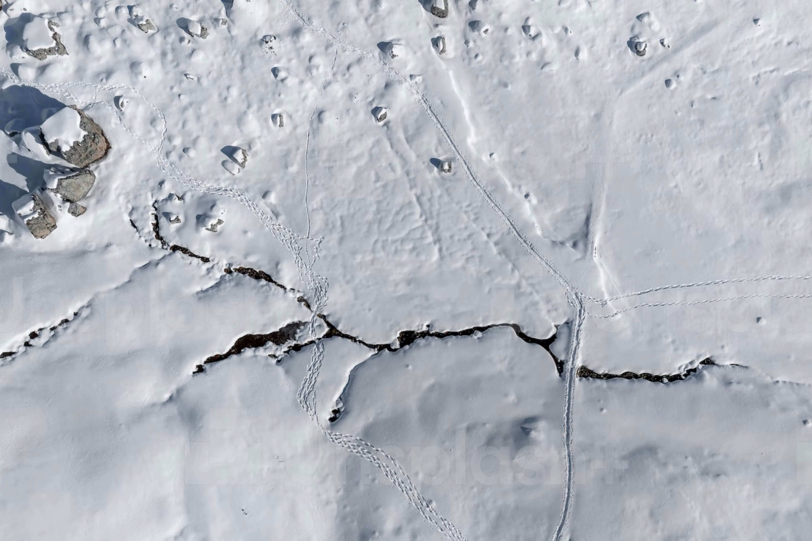 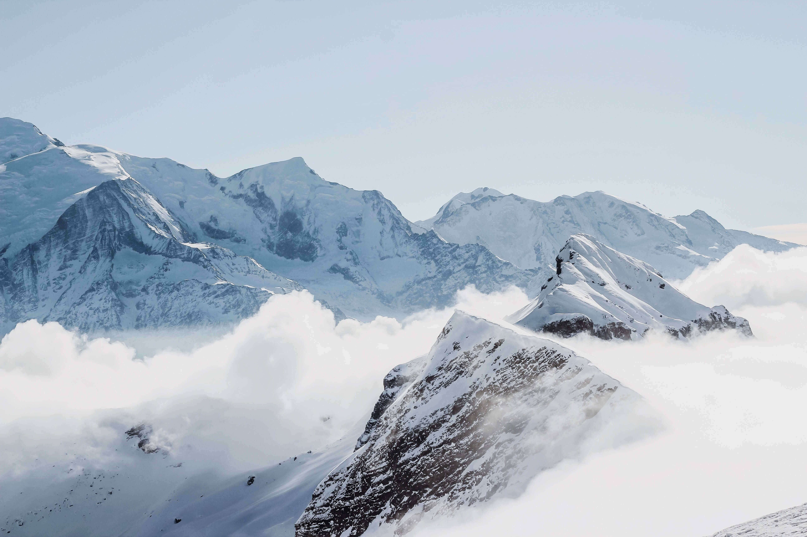 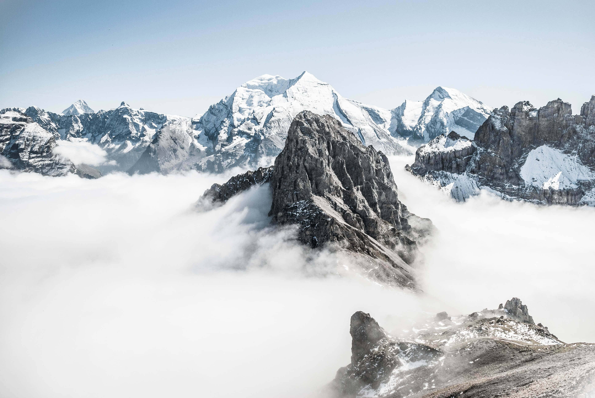 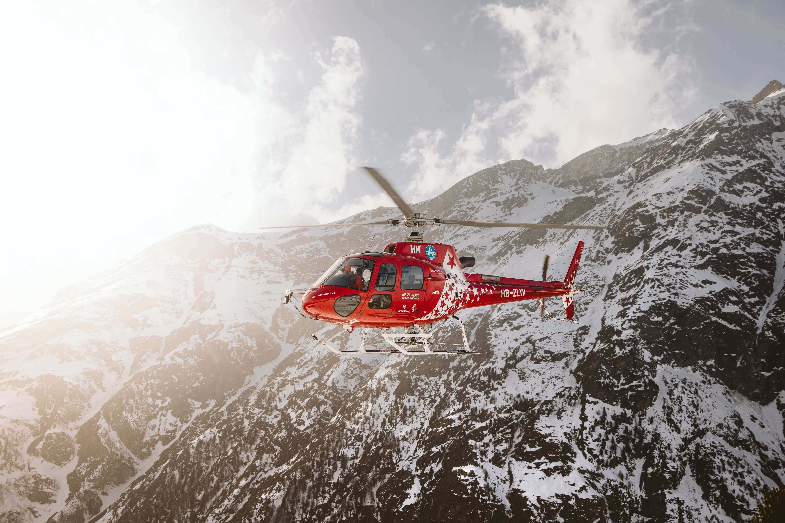Mountains are formed through a variety of different processes, each of which results in the uplift and erosion of the Earth's surface.
One of the most common ways in which mountains are formed is through tectonic activity. Tectonic plates, which make up the Earth's crust, are constantly in motion. When two plates collide, one plate may be forced underneath the other, creating a mountain range. The Himalayas, for example, were formed by the collision of the Indian and Eurasian tectonic plates.
Another way in which mountains are formed is through volcanic activity. Volcanoes can form mountains through eruptions that build up layers of lava and ash. As these layers solidify, they can create a large, steep-sided mountain. The stratovolcanoes, such as Mount Fuji in Japan, are an example of this type of mountain formation.
Erosion and weathering can also play a role in the formation of mountains. Over time, the forces of wind, water, and ice can erode and shape the surface of the Earth, creating mountains. The process of erosion can also cause mountains to be worn down and gradually disappear.
Lastly, Mountains can also be formed by the uplift of the land caused by movement in the Earth's crust, which can be caused by various factors like an isostatic rebound, intrusion of magma, and folding of the strata.
In summary, mountains are formed through various processes, including tectonic activity, volcanic activity, erosion, and land uplift. These processes shape and reshape the Earth's surface over time, creating the majestic mountain ranges we see today.